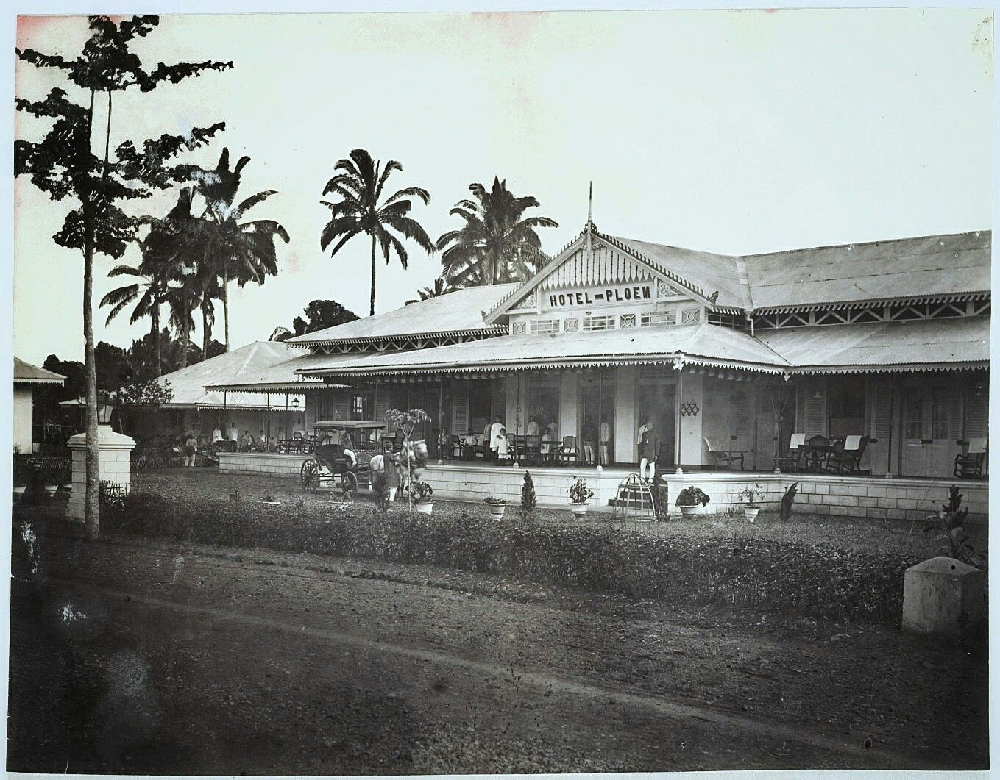
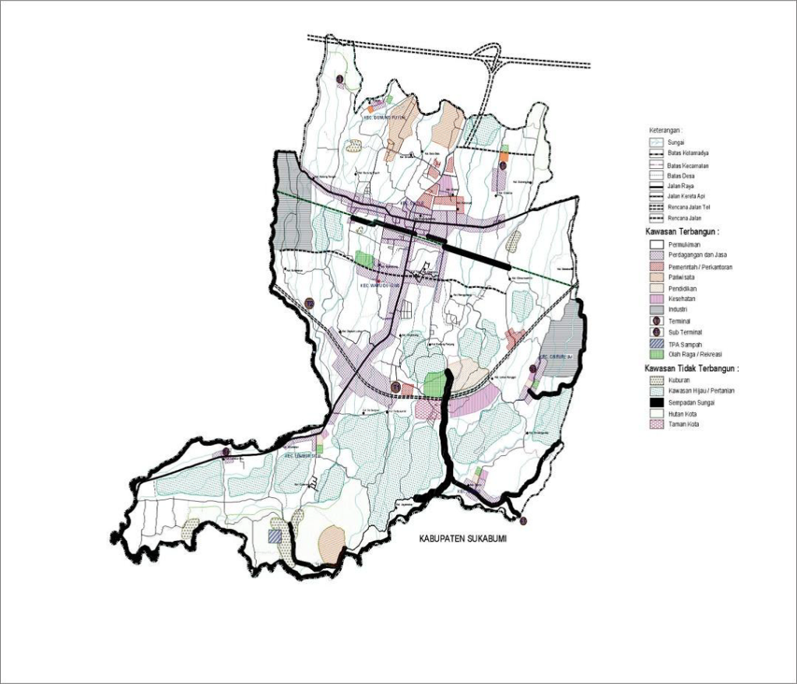
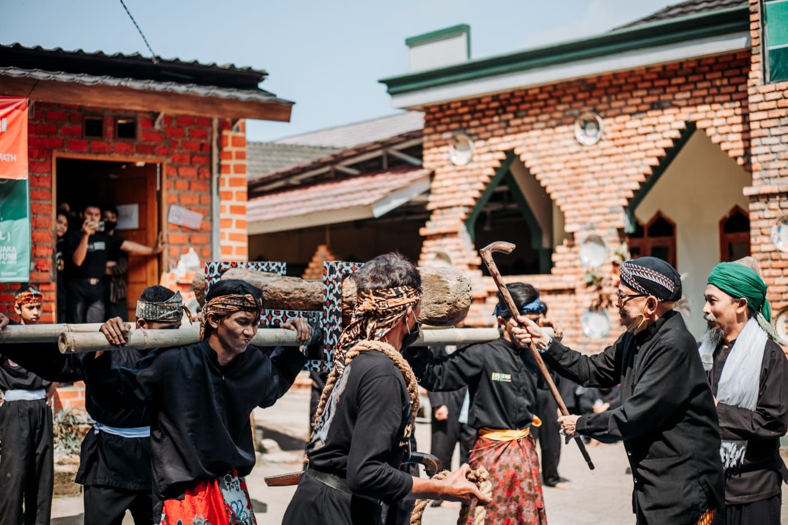
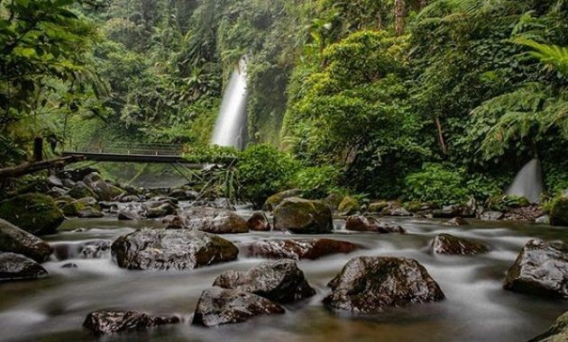
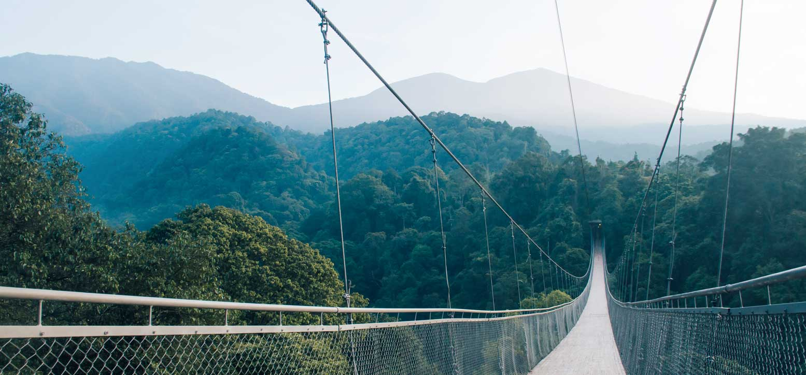
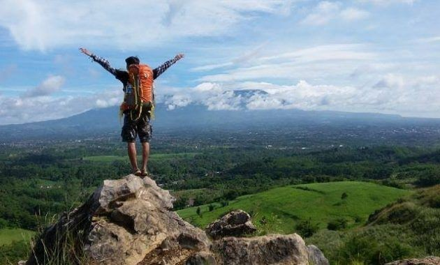
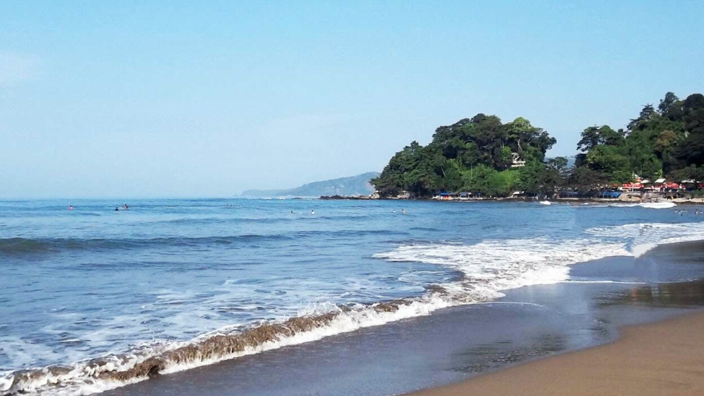

Sejarah

Kota Sukabumi berasal dari bahasa Sunda. Yaitu Suka-Bumen, menurut keterangan mengingat udaranya yang sejuk dan nyaman,
mereka yang dating ke daerah ini tidak ingin untuk pindah lagi karena suka / senang Bumen-Bumen atau bertempat tinggal di daerah ini.
Pada tahun 1914 Pemerintah Hindia Belanda menjadikan Kota Sukabumi sebagai “Burgerlijk Bestuur” dengan status “Gemeente”
dengan alasan bahwa di kota ini banyak berdiam orang-orang Belanda dan Eropa pemlik perkebunan-perkebunan yang berada di daerah
Kabupaten Sukabumi bagian Selatan yang harus mendapatkan pengurusan dan pelayanan yang istimewa.
Sejak ditetapkannya Sukabumi menjadi daerah otonomi pada bulan Mei 1926 maka resmi diangkat ”Burgemeester” yaitu:
Mr. GF.Rambonnet Pada masa inilah di bangun stasiun kereta api,
Mesjid Agung, Gereja dan Pembangkit Listrik. Setelah Mr. GF.Rambonnet
memerintah ada tiga ”Burgemesteester” sebagai penggantinya yaitu; Mr. WM Ouwekerk, Mr.A LA Van Unendan Mr. W.J PH Van Waning.
Geografis

Kota Sukabumi secara Geografis terletak di bagian selatan Jawa Barat pada koordinat 106 ˚45
‘50” Bujur Timur dan 106˚45
‘10” Bujur Timur, 6˚50
‘44” Lintang Selatan, di kaki Gunung Gede dan Gunung Pangrango yang ketingiannya 584 meter di atas permukaan laut,
dan berjarak 120 km dari Ibukota Negara (Jakarta) atau 96 km dari Ibukota Provinsi Jawa Barat (Bandung). Batas-batas wilayah Kota Sukabumi meliputi:
Sebelah Utara : Kecamatan Sukabumi, Kabupaten Sukabumi
Sebelah Selatan : Kecamatan Nyalindung, Kabupaten Sukabumi
Sebelah Barat : Kecamatan Cisaat, Kabupaten Sukabumi
Sebelah Timur : Kecamatan Sukaraja, Kabupaten Sukabumi
Secara administratif, Kota Sukabumi dibagi ke dalam 7 (tujuh) kecamatan yaitu
Kecamatan Gunung Puyuh, Cikole, Citamiang, Warudoyong, Baros,
Lembursitu dan Cibeureum. Jarak terjauh dari balai kota adalah Kecamatan Lembursitu, yakni sejauh 7 km.
Budaya

Selain beragam objek wisata alam, Kabupaten Sukabumi juga memilik beragam kesenian unik dan menarik, dan terdapat empat daerah utama kampung adat.
Keempat kampung adat tersebut yaitu : Kampung Adat Gri Jaya, Sinaresmi, Ciptagelar dan kampung adat Sinarasa.
Kesenian Lais
Terdapat di kampung Cicadas Sinaresmi kecamatan Cisolok. Seni ini mempertunjukan keahlian serta
ketangkasan para pelakunya yang tidak lepas dari unsur magis antara lain berjalan di atas tambang yang dibentang di ujung dua buah bambu dan atraksi keangkasan lainya.
Atraksi tersebut didukung seperangkat kendang pencak sebagai pengiringnya.
Kuda Lumping
Adalah jenis kesenian di kecamatan Surade. Permainannya tidak lepas dari unsur-unsur kekuatan magis,
serta gerakan ritmik kuda lumping diiringi seperangkat kendang pencak dengan mempertunjukan beberapa aksi seseroan,
mengupas kelapa dengan gigi, memakan pecahan beling, memakan gabah padi serta atraksi lainya.
Kesenian Topeng
Salah satu kesenian yang berada di kampung adat Ciptarasa, kecamatan Cisolok. Merupakan salah satu
jenis kesenian teater rakyat yang menggunakan topeng sebagai alat dalam membawakan alur cerita penuh humor.
Kesenian Gondang Buhun
Kesenian ini masih hidup di kalangan masyarakat desa Gunung Bentang, kecamatan Sagaranten. Jaman dahulu acara ini biasa digelar pada acara menumbuk
padi secara gotong royong oleh pra kaum Ibu tani dengan menggunakan alat berupa lesung dan halu.
Kesenian Parebut Seeng
Kesenian ini terdapat di kecamatan Cicurug. Kemunculan kesenian ini berawal dari dua kelompok perguruan silat Cimande,
dengan iringan kendang pencak silat tepak padungdung, kegiatan parebutan seeng berlangsung seru.
Kesenian Angklung Buncis
Berada di desa Gunung Bentang, kecamatan Sigaranten. Angklung buncis secara tradisional dilaksanakan pada saat masyarakat melaksanakan
kegiatan upacara menanam padi di sawah dengan bunyi angklung lagu buncis yang khas menurut tradisinya. Lagu-lagu yang biasa dibawakan antara lain lagu
Buncis, Bancet, Rawa, Engko, Buncis Balak, Manuk Gunung, dan Oray Orayan disertai gerakan lucu dari pelakunya.
Wisata
Dikenal memiliki kekayaan alam yang sangat indah, Sukabumi menjadi salah satu tujuan menarik di
Jawa Barat, selain Bandung. Apalagi Sukabumi sempat dijadikan latar syuting film Keluarga Cemara.
Dalam film, Sukabumi tergambar begitu asri, indah, dan alami. Berikut beberapa destinasi atau
tempat wisata di Sukabumi terbaru yang begitu indah dan Instagramable banget buat hunting foto
Curug Sawer

Saat singgah ke kawasan Jawa Barat, air terjun atau curug merupakan salah satu destinasi wisata terbaik.
Di Sukabumi, kamu bisa bertandang ke Kecamatan Kadudampit untuk menikmati indahnya Curug Sawer.
Walaupun berada di tengah hutan, lokasinya cukup mudah dijangkau. Untuk bisa melihat air terjun setinggi 30 meter tersebut,
perlu merogoh kocek sekitar Rp2.500. Curug Sawer dibuka mulai pukul 08.00 hingga 17.00.
Jembatan Gantung Situ Gunung

Jembatan fenomenal di Sukabumi ini masih satu lokasi dengan Curug Sawer di kawasan konservasi
Taman Nasional Gunung Gede Pangrango Resor Situ Gunung.
Panjangnya sekitar 240 meter, jembatan gantung ini diklaim menjadi yang terpanjang di Asia.
Jika ingin masuk ke sini harus membayar tiket masuk sekitar Rp18 ribu per orang. Pastikan
mengenakan alas kaki yang tepat, karena sepanjang perjalanan, harus melewati jalan setapak berbatuan.
Bukit Karang Para

Tak cukup 1-2 hari berwisata ke Sukabumi, karena wisata Instagramable yang bisa kamu datangi cukup banyak.
Salah satunya bukit Karang Para. Bukit ini terletak di kawasan Kampung Padaraang, Desa Kebonmanggu.
Di lahan seluas 12 hektare ini, kamu bakal puas bermain seharian. Banyak spot Instagenic yang siap menyambutmu, seperti jembatan hati.
Berwisata ke sini relatif terjangkau, tiket masuk Rp2.000; tiket selfie Rp2.000; dan tarif parkir Rp2.000.
Palabuhan Ratu

Pantai Palabuhanratu atau lebih populer sebagai Pantai Pelabuhan Ratu, adalah sebuah tempat wisata di pesisir
Samudra Hindia di selatan Jawa Barat. Lokasinya terletak sekitar 60 km ke arah selatan dari Kota Sukabumi.
Pantai ini dikenal memiliki ombak yang sangat kuat dan karena itu berbahaya bagi perenang pantai. Topografinya
berupa perpaduan antara pantai yang curam dan landai, tebing karang terjal, hempasan ombak, dan hutan cagar alam.
Karena tempat ini mempunyai daya tarik sendiri, presiden Soekarno mendirikan tempat
peristirahatannya pada tahun 1960 di Tenjo Resmi. Selain itu, atas inisiatif Soekarno pula didirikanlah Samudera Beach Hotel,
salah satu hotel mewah pertama yang dibangun di Indonesia pada kurun waktu yang sama dengan Hotel Indonesia,
Bali Beach Hotel, dan Toko Serba Ada “Sarinah”, yang kesemuanya menggunakan dana pampasan perang dari Jepang.